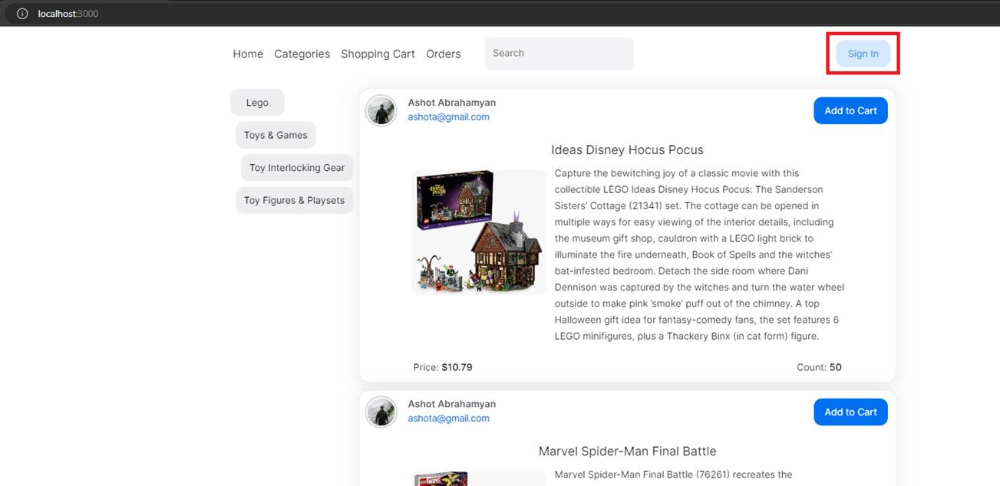
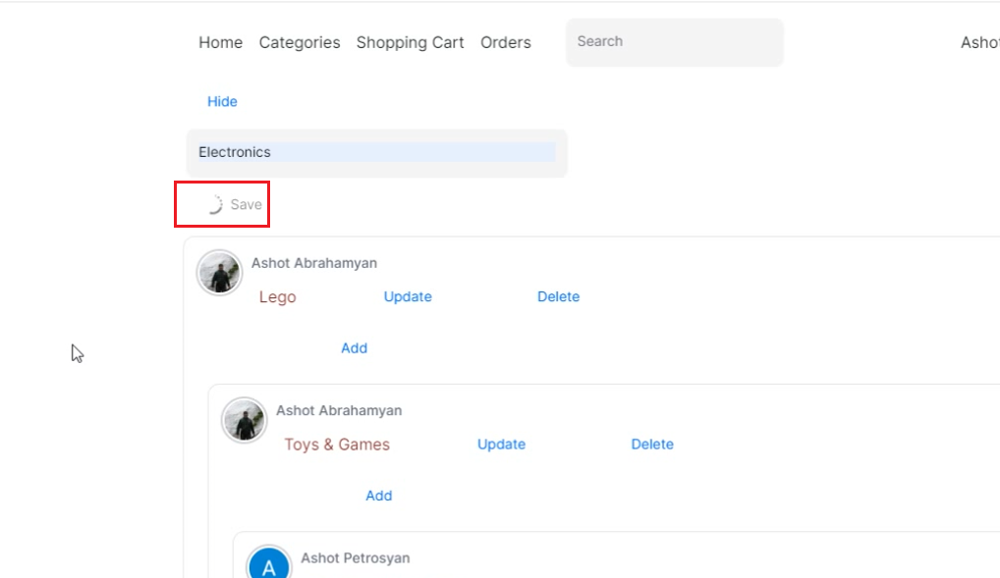
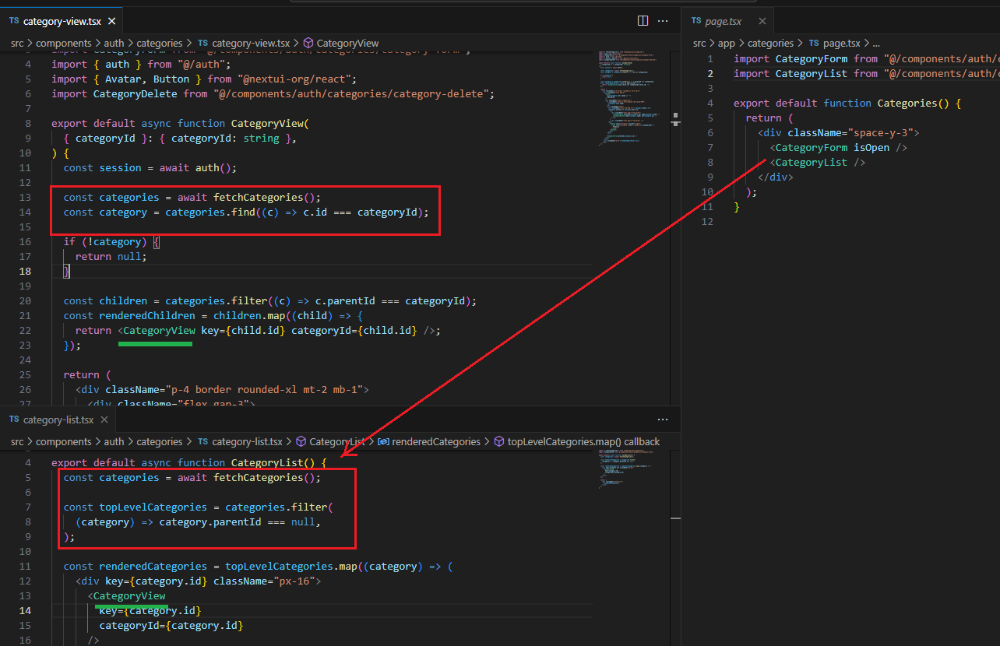

Next.js 14 Online Store
Video Link: https://youtu.be/lZnUgYTFq6E
GitHub Repository: https://github.com/Ashot72/Next.js-14-Online-Store
This is an online store app that embraces many of the features of Next.js 14.
Figure 1
Next.js employs a file-system based routing mechanism, where URL paths in the browser are determined by files and folders in the codebase. Following
conventions are crucial for proper routing functionality. We create src/app folder and inside the app folder a page.tsx file. This file represents the route.
Figure 2
This page.tsx represents Home page.
Figure 3
Next.js supports dynamic routes. Here we want to access the products of different categories. The square brackets [categoryId] indicates a dynamic route segment.
Figure 4
In this application, we use MongoDB Online https://www.mongodb.com/online with Prisma, a next-generation ORM https://www.prisma.io/
Figure 5
Server actions are asynchronous functions that are executed on the server and can be defined as use server.
Figure 6
Here we retrieve user's order (payment) information via server actions. If you do not specify the user server explicitly, then it is considered a server action.
Figure 7
Although we have not used server action at an inline level in our app, it is possible to use it within an inline function, not necessarily at the module level.
Figure 8
When we start using Next.js, we work within a single project where some of our code is sent down to the browser and executed there, while some remains on the server and is executed there.
In many cases it can be really challenging for us to understand where our code is actually running. You may think that a function gets sent down to user's browser
and is executed there, but that is not actually what happens. Instead, a server action is being executed on the server, so it is staying
on the server.
Figure 9
We will go into detail later on but for now whenever we submit a form, we enter some values, such as a name, description etc. and click on the Save
button. Some JavaScript running inside the browser automatically collects values from the form and assembles them into a packet of data sent off in a POST request to our Next.js server.
Figure 10
Our Next.js server is then going to receive that form data and automatically pass it on to server action. So, our server action again is running
on the server that is why it is called server action. Behind the scenes Next.js is creating a little miniature route handler for us. That is going
to be called whenever a user submits a form.
Figure 11
Note, that form component is a client component and can only import actions that use the module-level use server directive and in this case use server must be define
otherwise, you will receive an error.
Figure 12
Next.js documentation.
Figure 13
Whenever we work on a Next.js application, we are going to build our app out of two kinds of components. First kind is called
Server. Second kind is called Client. The first question that probably comes to your mind is obviously what is the difference?
Figure 14
What is the difference between these two things? A client component is like the same kind of react component you are already used to
using. It is a function that returns some JSX. It is going to be rendered into HTML and then displayed on the screen. A client
component can use all the classic features of react component such as hooks, event handlers, and so on. Server components in the
sense are functions that return JSX, but they have some additional limitations around them, but some additional capabilities as well.
When should we use one or the other? As much as possible we are going to generally prefer to use server components. The reason is very
simple. Server components are very closely integrated into Next.js. If we use server components, we are generally going to get better
performance and better user experience.
Figure 15
The first limitation is that server components cannot use any kind of hooks.
Figure 16
Server components cannot assign any event handlers. So, these are two big restrictions around server components.
Figure 17
As you see, for the client component, we use use client directive. They can use hooks, they can define state, they can set up event handlers
and so on.
Figure 18
One interesting limitation around client components is that they cannot directly show a server component. In other words, if I have a client component, I cannot import a server
component and then show it as a child directly.
Figure 19
Whenever a browser makes a request to our Next.js server, we are going to send them back some HTML immediately.
Let's imagine that we make a request off to our server. Our Next.js server is going to try to render some components.
In this case maybe we have got a single server component that is showing a client component. When this occurs, both
the server component and client component are going to be rendered into HTML.
Figure 20
The resulting HTML will be taken and sent back down to the user's browser. This HTML file that we send down has just plain HTML content
inside of it. There is no JavaScript in there. If we need to reach back to the server to obtain JavaScript code that might implement event handlers or state, the HTML
file will cause our browser to make a second request.
Figure 21
The second request is going to go to the Next.js server. The Next.js server is then going to take a look at all of our different client components.
Figure 22
It is then going to extract all the JavaScript from those client components into a file, and send that file down to the user's browser where it then
gets executed. Even though our client component is called a client component, it still gets rendered one time whenever a user first makes
a request to our server. That just a little bit unexpected sometimes because it is called a client component and you might think that it only
gets executed inside the browser, but that is not the case. It does get rendered one time on the server.
Figure 23
In the header server component, we imported the search-input.tsx client component.
Figure 24
Let's refresh the page and click on localhost. Take a look at what we get in the preview. The fact that we can see that information (search box) in the response
indicates that our client component is indeed being rendered on the server completely. We are rendering the client component on the server and then taking
the resulting HTML, sending it down to the browser, and then a little bit later on, all the appropriate JavaScript from that component gets sent down to the
browser as well.
Figure 25
We need to make sure that whenever a user tries to submit this form, we make sure that they add in some valid name, description etc.
If they do not, we want to show an error message to the user. In addition, we want to make sure we have some general error handling.
If anything goes wrong with inserting data into our database, we want to print out an error message for that as well. This entire process
would usually be very easy if we were making a normal react component. These are forms that can run completely without any JavaScript
in the user's browser. That is the key part. That is why adding the error handling is going to be a little bit challenging. When a user submits the form
by clicking the Save button, information is being taken from the form and sent to a server action. The server action then runs. We may redirect the user
to some other page in our application. We need to somehow allow a server action to run, but allow that server action to somehow get our page
to render again with an error message being displayed on it. In other words, we are trying to communicate from a server action back to a page.
Figure 26
To do so we are going to use a very specially made hook from the react-dom library This hook is called form state.
Because this is a hook, we cannot use it with a server component, so it can only be used with a client component.
Even though we are going to use this hook with a client component it is still going to work just fine even if the user is not
running JavaScript in the browser.
Figure 27
When we call useFormState we pass some initial data, such as objects etc. Whenever we render out form, the form state object is going to kind
of magically embed itself inside of the form's HTML. We can imagine this object kind of gets directly sent down to the user's browser, and it is
going to be included in this form invisibly behind the scenes.
Figure 29
Then a user is going to enter in a name, description etc. and click on Save.
Figure 29
When we submit the form, the browser is going to collect that information. It will be sent of to the backend server where it gets assembled into some
form data object. Along with that form data, the form state object is also going to be included. When our server action gets called, it is going to
receive two arguments. It is going to receive the form state and the form data. Then inside the server action, we can run some validation code and
make sure that the user entered some validated name, description etc. If the server thinks that there is some issue with that data, or if really anything
goes wrong at all, the server action now has the ability to communicate back into our page component.
Figure 30
To add some validation, we use third part package called Zod. To make use of Zod, we are going to import some variable
called Z from the library. Weare going to first create a schema object. This is an essentially a set of validation rules that we want
to apply to some data in our application. We can use a schema object to validate things like arrays, objects, strings, numbers, booleans
just about every piece of data you can imagine inside of JavaScript program.
Figure 31
If we want to pass extra information to a server action, not just form data, we can do it via the JavaScript native bind() function.
Figure 32
In our project, we use NextUI https://nextui.org/, a fully-featured React UI library built on top of Tailwind CSS. You can learn how to integrate NextUI into your project.

Figure 33
We are going to go through the process of setting up Next.Auth https://next-auth.js.org/

Figure 34
We will be using Google Provider.
Figure35
We go to https://console.cloud.google.com/
We should create a new project. I already did but here are the steps.
Figure 35
Giving a project name and click Create.
Figure 37
We open up the navigation menu, go to APIs & Services then OAuth consent screen.
Figure 38
Click Create.
Figure 39
We enter the App name and Email address.
Figure 40
Then we add the authorized domain which is going to be http://localhost:3000
Figure 41
Finally let's go to Credentials and Create Credentials.
Figure 42
We select OAuth client ID menu item.
Figure 43
We choose Applicant type as Web Application. Add Authorized JavaScript origin http://localhost:3000 then add Authorized redirect URI as http://localhost:3000 then click Create.
Figure 44
This process can take about five minutes but you can immediately see the Client ID and Client secret.
Figure 45
We go to .env file create GOOGLE_CLIENT_ID and GOOGLE_CLIENT_SECRET and copy paste the respective values. That is, it!
Figure 46
In the auth.ts file we make use of Google Provider. We need to create app/api/auth/[…nextauth]/route.ts file to handle the requests between
Google Servers and ours.

Figure 47
When we submit a form the server action can take any amount of time and a user is just going to be sitting around wondering what is
going on. It is better to show simple loading spinner.
Figure 48
For that reason, we use useFormStatus hook to show a pending state while a form is being submitted.
Figure 49
Note useFormStatus returns the status for a specific <form>, so it must be defined as a child of the <form> element.
Figure 50
In our app, you may see that we render the same control in different places but with different parameters. On the home page, we show products belonging to the first category.
Figure 51
We show the same products control, but in this case for the selected category.
Figure 52
We use the same control when searching.
Figure 53
You will see that we call query functions in the parent components with different parameters and use them in the child component. This way, we can easily reuse the child component without any modification.
In other words, we Define in Parent, Fetch in Child approach.
Figure 54
Here are the query functions.
Figure 55
In our app, we have a Categories page where we recursively render categories.
Figure 56
To get all categories recursively, we could use the Define in Parent, Fetch in Child approach described above. We will retrieve all categories at the root level, then for each child, we
will find its category, which should work fine.

Figure 57
Our category page.tsx renders CategoryView in CategoryList component. It then calls CategoryView component, which in turn recursively calls itself. We call the fetchCategories() query function,
which is impractical as it will be called for each CategoryView.
Figure 58
Let's print fetch categories in the fetchCtegories function and refresh the category page.
Figure 59
After refreshing the page, we see that we got fetch category printed once.
Figure 60
We used cache(). Let's remove it for a moment.
Figure 61
Now we see that it is called for each CategoryView component making lots of duplicate requests.
Figure 62
Let's see how the caching system works. We will look at the functions that we were calling from our three different components.
Inside of Page we are calling getData with 2 inside Profile and Settings with 1.
Figure 63
These are going to be received inside of the cache.
Figure 64
The caching mechanism is going to take a look at these different functions, and it is going to remove any duplicates that it sees.
In this case the duplicates here are getData(1) and getData(1). Those are absolute duplicates of each other because it is calling the same
function with the exact same arguments.
Figure 65
With the cache, the second instance of getData(1) is not allowed to actually run and make a request
off to the database. Instead, only the unique function calls are allowed to run. In this case getData(2) and getData(1) will actually be executed.
Figure 66
The database will reply and send data for 2 backward to the page and the data for 1 is going to be sent back over to profile.
Figure 67
Settings is still going to get the return value of calling getData(1). The only difference is that the function itself getData(1) does not
actually, be executed. It does not actually make a request off to the database. Instead, it shared whatever response comes back from the
previous call to getData(1). This is the super simple memorization caching system in action.
Figure 68
About cache.
Figure 69
When we run our app, users may see no content whatsoever until all of our different components have been rendered on the server, which is not good. What we would
like to do is render the static parts of the page first, and then render the dynamic parts. On the home page, we have two dynamic parts: categories and products, as it takes
time to retrieve them from the database.
Figure 70
The streaming feature leverages React's Concurrent API and Suspense to suspend or pause rendering until the data is ready and available, leading to a faster
and more optimized performance. The Suspense API provides a fallback UI that appears while the data is loading. This fallback UI is loaded along with other static contents
into the page. This means that as the page loads, the fallback UI is displayed with other contents that are not dynamically rendered. The fallback UI then remains visible
until the asynchronous data fetching is complete. Once data is ready, the fallback UI is replaced with data.
Figure 71
In our case, the fallback UI is the NextUI skeleton control, which is displayed with static data. Once the data, categories, or products are retrieved, they are rendered with
the actual data accordingly. Let's talk about one of the most important and truly surprising things. When developing a Next.js app, we run npm run dev command to run
the app locally for development. For the production build, we run npm run build followed by npm start commands.
Figure 72
Before running the build command, I slightly modified the createOrUpdateCategory function. Once we create a new category, I redirect the user to the home page.
Figure 73
I ran the npm run build command, followed by npm start (or npm run start).
Figure 74
I am creating test category at root level.

Figure 75
Once you click Save, you will be redirected to the Home page and will not see the Test category. Even if you see it once you refresh the page, it will be gone.
When did it go? I can refresh the page as many times as I want and I just do not see it come back.
Figure 76
Actually, I see it created on my MongoDB page. That is a big surprise.
When you start running your application in production mode, the behavior of you application changes in a very significant way.
Figure 77
This all comes back to idea of caching in Next.js. Next has four different caching systems. It is a performance optimization meant to reduce
the amount of work that our application has to do. Some of these caching systems run when we are developing our application. That is the first three.
These three we have been dealing with behind the scenes. When we build our application for production, this last system comes into play. It is called
the full route cache.
Figure 78
We run command npm run build. When we run Next.js is going to find all the different routes in our application. One route is particular the Home page.
Whenever Home page is rendered, we reach into our database, get all of our categories, and then render them out onto the screen. Next.js finds that
route and them asks some questions about it. It does a little bit of analysis and it tries to determine if the route is static or dynamic. We will talk of
these terms in just a moment but right now understand that Next.js is going to assume that our Home page route is static because it is static.
Next.js is going to implement some really aggressive caching on this route. The default behavior is really inappropriate for this kind of application
we are working on right now. We have to configure this or change the caching configuration a little bit.
When we run npm run build it is going to render that Home page component and when it renders that component, we have some code inside there to
reach into our database and get all the categories inside there. Let's imagine we have categories one, two, three. We are going to fetch these.
They are then going to be rendered into an HTML file. This HTML file is then saved to our hard drive. Then, when our application is running in production mode,
whenever someone types into their address bar localhost 3000 and they come to the Home page of our application, they are going to get this exact HTML file
that is going to have the exact same three categories listed in it for all time. Right now, we have no mechanism in our application to update this file in production,
even as we start to edit or add or delete categories. That is why every time we refresh our page, when it is running in production mode, we see the exact
same categories on the screen. The behavior that the category appeared deleted, it was not actually deleted. When we refresh the page, we are just getting
the exact same HTML file that it kind of has a snapshot of our database from when we built our project. We can say, that this default caching behavior is super
inappropriate for our Home page because our Home page has some data that is going to change all the time. That means for lot of applications we work on,
whenever we have a route that is determines to be static, we probably have to configure the caching mechanism where we are going to end up seeing some
stale data when our application is running in production.
Let's focus on what it means to be static or dynamic and how we can kind of figure out which routes in our application are which. Let's run npm run build.
Figure 79
After it is all done, we are going to get that nice, pretty output at the very end. That kind of look like they are just pretty bullet points, but they actually
convey a lot more information.
Figure 80
The symbols we see next to each route tells us what Next.js thinks about each of the different routes we have added into our application. Whenever we
see a little circle like that, that means that Next.js thinks we have a route that contains static data because it is a static route. Dynamic routes are
going to behave a little but closer to how you might expect a traditional web application to work. Whenever someone comes to our application and makes
a request, Next.js is going to render that page and send the result back to that person. Now, the big question becomes how does Next.js decide what a
static route is and what a dynamic route is? All pages by default are static. In order to become a dynamic route, we have to do one of a couple of different
things inside of the route.
Figure 81
The first set of things we can do inside of a page that is going to make it into a dynamic route is to modify cookies or to use anything ties to a query
string, such as access a query string inside of a server component through a prop that is automatically passed to our component. We can also force a
route to be dynamic by setting what is called a route segment configuration. These are very specifically named variables, so we can export from our page
files. Some of different options that we pass to the fetch function to fetch our data is going to turn our route into a dynamic route. And finally, the big one.
This is going to occur in a lot of your applications; any time you use dynamic path. That is a path where you have got one of those wild cards in it, that is
going to automatically, by default, turn this into a dynamic route.
Figure 82
In our case we got the wild card in two routes. You see that some other routes are also dynamic and will come to those a little bit later.
Maybe we want a static route, it is not the worst thing in the world. We do kind of want caching because it does dramatically improve the performance
of our application. At some point in time, even with a static route, we have to accept that our data may change after initially building our application for production.
We need a method for updating this cached file.
Figure 83
Whenever our page is rendering with out-of-date data, we want to see a couple of different ways that we can control caching without disabling
it entirely, but that is of course an option. The first way we can deal with this is we can set up some time-based caching rules where every so many seconds
we will ignore the cached page and we will get fresh new data and render our page. We can set up on demand cache control where at certain points in time,
where we are really sure that data has changed, we can forcibly remove a cache page and the next request that comes in will render it. And the finally, we can
also just completely disable caching is we do not want to deal with the system at all.
Figure 84
With on-demand, at ever certain points in time where we are really sure that maybe the data on some path has changed or the data used by some path has
changed we can call a function called revalidatePath that tells Next.js that we want it to dump any cached version of that particular page, and the next time
someone makes a request to it; it should render the page from scratch. In our application we are one hundred percent aware of when data is changing.
We know our data changes whenever one of our server action functions run. Whenever we create, edit or delete a category, that is a sign that our data
has been changed and it is data that is being used by our Home page. We should probably use that revalidatePath function to tell Next.js that we want
to clear the cache of this page and rebuild it next time someone asks for it.
Figure 85
Let's see how we can enable static caching for dynamic pages by implementing generateStaticParams function.
Figure 86
We will do it for /[categoryId] dynamic path, which is used when you navigate between categories.
Figure 87
Whenever we run the command npm run build once again, Next.js is going to find all the different routes in the application. One it is going to find is
/[categoryId]. Next.js is going to mark this route as dynamic but we can still get some caching enabled for this page by implementing a function called
generateStaticParams. This is going to be a function that we export from the page file. Inside the function we are going to write out some code that is
going to reach into our database and get all of the current categories that exists inside there. Then from the function we are going to return an array
of objects that each have Id that is going to be the Id of each of these categories in our database. Once these different URLs have been generated,
Next.js then is going to prerender these different routes. Each of this are going to render at build time. They are going to rich into the database,
get those categories, pull them out, render the page, and then Next.js is going to cache the result.
Figure 88
We implemented the generateStaticParams function based on what we just described.
Figure 89
After running npm run build command that the built output is a little bit different this time. It is telling us that it has found /[categoryId]
and generated static params.
Figure 90
These are categoryIds found in our database. Next.js made the cached version of those Ids.
Figure 91
When you run the app in development mode with npm run dev and navigate between categories, you will see loading, then categories and products rendering. Categories are not cached.
Figure 92
In production mode, switching between categories is super-fast. Both categories and products render instantly since we are viewing the cached version of the page, with no delay. The only problem
here is that we have cached pages, which means that now we are back in that same scenario, we were before.
Figure 93
We are back to on-demand cache control, but with some additions. When we create a new category, we should not only revalidate the path for the Home page
but also, for the remaining categories since the path is not dynamic anymore. For example, if you create a new category, let's say test, then when you return to
the home page and try to navigate to another category, such as Lego, the newly created test category will disappear. You will get the cached version as
the path for that category has not been revalidated.
Figure 94
Creating test category.
Figure 95
When navigating to any category, all pages are cached, loading instantly, and the test category does not disappear when navigating to any category.
Figure 96
In our application we authenticate a user both on client and server components.
Figure 97
When we sign in, we authenticate a user using the client-side control header-auth.tsx. However, when a user wishes to view their payments, we check whether they are authenticated
or not using the server-side component. Both processes work in the same way; we retrieve the same properties whether we call authentication on a client control or server.
Figure 98
In a Next.js app, we should prefer using server components instead of client ones. Previously, we used the header-auth.tsx file as a client component. I changed the code,
and now header-auth.tsx is not a client component, yet the app works exactly the same way.
Figure 99
If you run npm run build, you will be surprised to find that the root route is now a dynamic route. Why?
Whenever you make use of this auth function behind the scenes, NextAuth is going to access and possibly modify the cookies
inside the request. We are modifying cookies or possibly reading them.
Figure 100
We've already discussed it. As we modify the cookies, the page becomes dynamic. On every page of our application, we display our header component since we included it in the layout file.
This means that every component, including the header, or every root containing the header, essentially every page in our application, is marked as dynamic.
Simply checking whether a user is logged in or not makes our page dynamic.
Figure 101
Now, we can understand why cart and payments routes are dynamic.
Figure 102
I did some testing. I commented out all the code related to authentication and ran the npm run build command. Now you can see that the /payments route is static.
Figure 103
Another dynamic route is /search.
Figure 104
In the code we see that we have used searchParams prop.
Figure 105
That made the route dynamic.

Figure 106
After commenting out the searchParams prop and building the app, we could see that the /search route converted to static.

Figure 107
We render the search box in a client component using useSearchParams. The SearchInput component is rendered inside Suspense. Let’s remove Suspense and build the app.
Figure 108
After building it, we will encounter some warnings. Client components using useSearchParams need to be wrapped with Suspense, or you will receive a strange warning at build time.